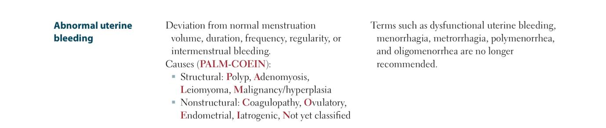

DYSMENORRHEA
Correction Before Starting
- Cardiovascular disease prevention benefit of systemic HRT in early menopause should be crossed out and considered a risk rather than a benefit.
Case Introduction
Your next patient is a 24 year old lady who has presented to you complaining of painful periods
Task:
- Take history from the patient for 5 minutes
- Explain what examination you will be doing to the examiner
- Explain your diagnosis and differentials to the patient
Primary vs Secondary Dysmenorrhea
Primary
- No pathological cause.
- Pain starts before bleeding.
- When bleeding starts → pain settles downward over 3–4 days.
Secondary
- More severe, longer duration (7–8 days).
- Pain worsens when bleeding starts.
- Pattern worsens with time.
- Other features suggestive of underlying condition.
- Best example: Endometriosis.

Differentials Framework
Intrauterine
- adenomyosis
- Menorrhagia - passing clot
- Endometrial carcinoma
- Fibroids
- IUD
- Miscarriage
- Haematometra from congenital anomalies
- Cervical stenosis
Extrauterine
- Endometriosis
- Pelvic inflammatory disease
- Ovarian Carcinoma
- Adhesions
- Ectopic pregnancy
- Retained tampon
Nongynaecological
- Psychosomatic disorders
- Depression
- Irritable bowel syndrome
- Chronic constipation
- Inflammatory bowel disease diverticulitis
- Musculoskeletal - referred pain
- Renal calculi/urinary tract infection
History Taking Structure
Start with Open-Ended Question
- “How can I help you today?”
- Reassure: “I understand how distressing this can be…”
1. Pain Assessment (Basic SIQORA)
- Site: where is the pain felt?
- Intensity: scale 1–10
- Quality
- Onset: since when? is it getting worse?
- Radiation: important for referred pains
- A1: Better/Worse factors
- A2: Effect on life
- Note: relation of pain to mental health
2. Specific Period-Related Pain Questions
- Does pain get worse when bleeding starts?
- How many days does the pain last?
- Any medications tried? Do they help?
- Optional: when does pain start before bleeding?
3. Five P’s (Period + Partner + Pills + Pregnancy + Procedures)
Period
- Last period (rule out OB complications)
- Regular/irregular
- Excessive bleeding (menorrhagia)
- Pain or bleeding between periods
Partner / Sexual History
- Sexually active? If not currently, ask before?
- Dyspareunia (do you have pain during sex?)
- Post-coital bleeding (do you have bleeding after sex)
- STI history questions: stable relationship, multiple partners, condoms, any diagnosed STI
Pills
- R u using Contraception (esp. IUD)
Pregnancy
- Number of pregnancies
Procedures
- Surgeries down below (cervix, uterus) → adhesions
- Cervical screening up to date?
Differentials Exploration (Targeted Questions)
Cancers
- Loss of weight
- Loss of appetite
- Lumps/bumps (lymphadenopathy)
- Family history of cancers (uterine, cervical, ovarian)
Fibroids
- Abdominal pain
- Pressure sensation
- Period changes (already asked)
Endometriosis
- Dyspareunia (already asked)
- Pain on passing urine
- Pain on opening bowels
- Blood in urine or stools
PID
- Fever
- Vaginal discharge
- Abdominal pain
Ovarian cancer + GI overlap
- Bloating
- Constipation/diarrhea (IBD/IBS)
Urinary (KUB)
- Dysuria
- Frequency
- (Blood in urine already asked in endometriosis)
Musculoskeletal
- Back pain
Closure of History
- SADMA: smoking, alcohol, drugs, medications, allergies
- Past medical history
- Family history (if missed earlier)
Physical Examination Explanation (to Examiner)
Allocate 1 minute here, 2 minutes for differentials.
Transition
- “Apologies Jane, I will talk to my examiner now.”
General Appearance
- Cachexia (most relevant to differentials)
Vital Signs
- Temperature (PID/infections)
Abdominal Examination
- Palpate for masses or tenderness
Pelvic Examination (Main Section)
Preparation
- Offer chaperone
- Explain and obtain consent
Inspection
- Look for:
- Bleeding
- Discharge
- Rashes / signs of STIs
- Bleeding
Speculum Examination
- Look for:
- Cervical abnormalities
- Masses
- Ectropion
- Anything else abnormal
- Cervical abnormalities
Bimanual Examination
- Cervical motion tenderness
- Uterus
- Size
- Borders
- Regularity
- Tenderness
- Size
- Adnexa
- RIF / LIF
- Masses
- Tenderness
- RIF / LIF
Digital Rectal Examination (DRE)
- Look for:
- Tenderness
- Nodularity (Pouch of Douglas)
- Tenderness
- Frequently positive in endometriosis cases.
Urine Pregnancy Test
- Only mention if last period more than 4 weeks ago.
Diagnosis Explanation to Patient
Typical positive findings in exam scenarios:
- Pain lasts 7–8 days
- Worsens after bleeding starts
- No red flags (no weight loss or cachexia)
- Dyspareunia
- Pain/bleeding with urination or opening bowels
- Blood in stool or urine sometimes reported
Diagnosis
- Endometriosis
Simple Explanation
- “in this condition, The inner lining tissue of your womb grows outside of the womb.”
Why this diagnosis? (Reasons)
- Severe period pain
- Pain lasts several days
- Worse when bleeding starts
- Pain on sex
- Pain/bleeding passing urine or opening bowels
Differentials (Long List Required)
- Cancers
- Fibroids
- PID
- Ovarian cancer
- Adhesions
- Retained tampon
- Cervical problems
- GI conditions
- Urinary conditions
- Musculoskeletal referred pain
- Other intrauterine/extrauterine/non-GYN causes
Second Dysmenorrhea Case (Ultrasound Cyst Case)
Your next patient is a 23 year old lady who presents to you complaining of excessive pain on her periods. She has done an USD and it is showing a 1.9cm unilocular cyst with thin walls in the left ovary. The USD was done 2 weeks before her period.
Task:
- Explain results to the patient
- Take history from the patient
- Explain what physical examination you would like to do to correlate findings with the period pain
Explaining the Cyst
Key Teaching Points
- Designer intentionally gives a size to confuse.
- Anything under 3 cm = normal follicular cyst.
- Follicular cyst = simple cyst with:
- Thin walls
- Unilocular
- No septations
- No solid components
- Thin walls
- It is not:
- Endometrioma
- Ovarian cancer
- Pathological ovarian cyst
- Endometrioma
Explanation to Patient
- Ultrasound shows a 1.9 cm cyst on the ovary.
- A cyst is a sac filled with fluid.
- Characteristics suggest it is a normal follicular cyst.
- “This is the normal egg cell growing in your ovaries.”